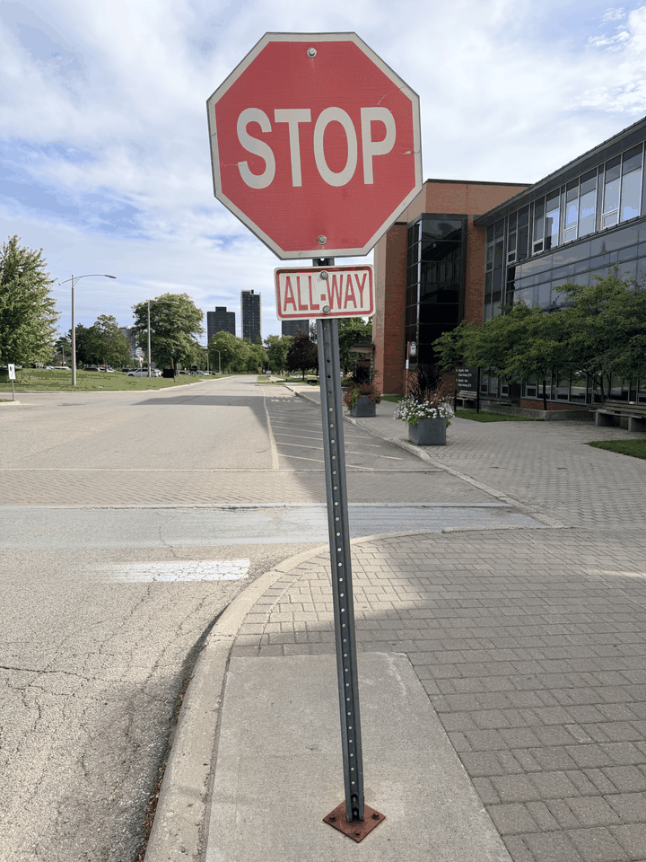

03 / THE DOLLY ZOOM
One sign.
A shifting background.
Seven still photographs combine changing viewpoint and zoom into a short animated sequence.
The stop sign is stationary. The GIF orders the original photographs from a near, wide view toward a farther, zoomed-in view. Keeping the sign roughly comparable in size makes the changing background more noticeable.


All seven GIF frames, in playback order. Endpoint focal lengths are 35 mm equivalents from the original HEIC metadata. Playback order: IMG_7875, IMG_7874, IMG_7872, IMG_7871, IMG_7873, IMG_7870, IMG_7869.
Why the background appears to move
Moving back changes the relative scale of foreground and background. Increasing zoom compensates approximately for the shrinking subject, while the background grows relative to it. This combination produces the characteristic dolly-zoom effect.
The handheld sequence has some variation in sign size and alignment, so the effect is not perfectly stabilized. It uses seven photographic frames; no generated or interpolated frames are added.

The PDF shows still frames. Open the accompanying GIF or the offline webpage to see motion.
